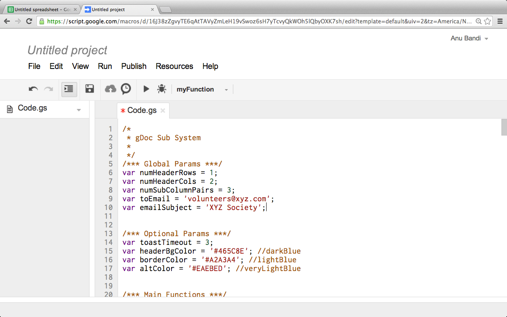

Instructions
- Create a new Google Docs spreadsheet.
- Select
Tools > Script editor.... - Select
Blank Project. - Paste the code from main.js. Update the global params as needed. 
-
File > Save. Name your project. - Select
File > Project properties. Set the appropriate timezone and save. - Select
Resources > Current project's triggers. - Click
Add a new trigger. Set a Time-driven trigger to send emails every morning. - Save your changes and authorize the app to send emails.
- Reopen the spreadsheet. You should now see a Subs menu.
- Setup your header rows and columns. The only requirement is that the first column contain dates.
- Note: If everything is setup correctly, the script should start coloring the cells appropriately. This image was taken on 1/25/14, so the dates before that are greyed out automatically.
- Tip: It might be helpful to put the day info in the second column. This can be done by adding
=TEXT(A2, "E (MMM d)")as seen above. - The Subs menu can be used to manually do certain tasks.
Send emailcan be used to manually send an email anytime.Update colorscan be used to force all colors to update.